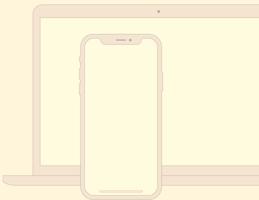

Source helps creators do more of what they love
A device that enables collaboration will lessen the chance of work having to be redone.

A device that enables collaboration will lessen the chance of work having to be redone.

In the context of information architecture, information is separate from both knowledge and data, and the lies nebulously between them.